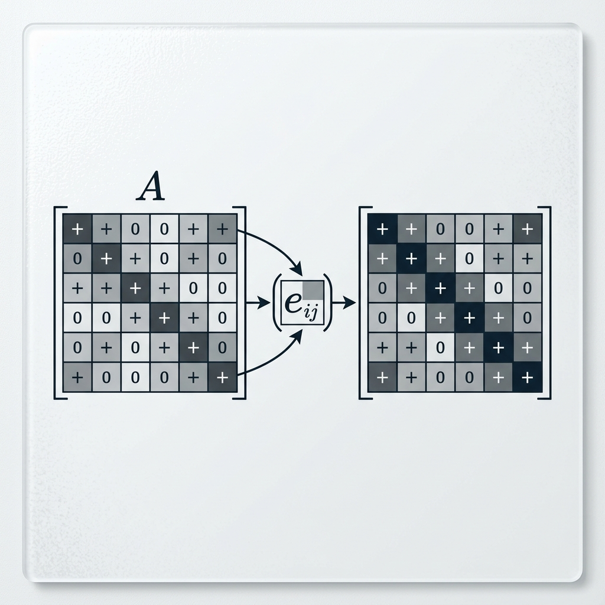

Entrywise Exponential of PSD Matrices

Mathematical Exposition
In linear algebra and matrix analysis, the Schur product theorem states that the Hadamard (entrywise) product of two positive semidefinite (PSD) matrices is also positive semidefinite. A remarkable consequence of this is that the entrywise exponential of any real symmetric positive semidefinite matrix is also positive semidefinite.
Mathematical Statement
Let $A = (A_{ij}) \in \mathbb{R}^{n \times n}$ be a real symmetric positive semidefinite matrix, denoted as $A \succeq 0$. The entrywise exponential of $A$ is the matrix $e^{\circ A}$ defined by:
$$(e^{\circ A})_{ij} = e^{A_{ij}}$$Then, the theorem states that:
$$e^{\circ A} \succeq 0$$Proof Sketch
The proof relies on the Taylor series expansion of the real exponential function:
$$e^x = \sum_{k=0}^\infty \frac{x^k}{k!}$$Applying this entrywise to the matrix $A$, we get:
$$e^{\circ A} = \sum_{k=0}^\infty \frac{1}{k!} A^{\circ k}$$where $A^{\circ k}$ represents the $k$-th Hadamard power of $A$ ($A^{\circ 0} = J$, the matrix of all ones, which is PSD because $J = \mathbf{1}\mathbf{1}^T$; $A^{\circ 1} = A$, which is PSD by assumption). By induction using the Schur product theorem, since $A$ and $A^{\circ k}$ are PSD, the next Hadamard power $A^{\circ (k+1)} = A^{\circ k} \odot A$ is also PSD. Since positive semidefiniteness is preserved under positive scaling and addition, every partial sum of the series is positive semidefinite. Finally, because the set of PSD matrices is closed in the Euclidean topology of $\mathbb{R}^{n \times n}$, the limit of this convergent series, which is $e^{\circ A}$, must be positive semidefinite.
Lean 4 Formalization
Our Lean 4 proof formalizes the Taylor series limit approach. First, we show that the set of positive semidefinite matrices is closed in Lean's topology. Then we establish that the entrywise power $A^{\circ k}$ is positive semidefinite for all $k \ge 0$ by showing that $A^{\circ 0} = J$ is PSD and using the Hadamard product theorem (`Matrix.PosSemidef.hadamard`) for the induction step. Finally, we show that the entrywise Taylor series converges to `A.map Real.exp` and conclude using the topological closure property.
import Mathlib
import Mathlib.Analysis.Normed.Algebra.Exponential
open scoped Matrix MatrixOrder
open Matrix
namespace Submission
/-- Matrix is a type synonym for `n → m → α`. If the unifier has already treated
the type as a function, `unfold Matrix` will fail to find the literal token.
We use `tendsto_pi_nhds` which naturally operates on function types. -/
lemma hasSum_matrix {ι n m α : Type*} [Fintype n] [Fintype m] [TopologicalSpace α]
[AddCommMonoid α] {f : ι → Matrix n m α} {M : Matrix n m α} :
HasSum f M ↔ ∀ i j, HasSum (fun k => f k i j) (M i j) := by
unfold HasSum
refine Iff.trans tendsto_pi_nhds ?_
apply forall_congr'; intro i
refine Iff.trans tendsto_pi_nhds ?_
apply forall_congr'; intro j
apply Iff.of_eq
congr! 1
ext s
classical
induction s using Finset.induction_on with
| empty => rfl
| insert a s ha ih =>
rw [Finset.sum_insert ha, Finset.sum_insert ha]
change f a i j + (∑ b ∈ s, f b) i j = f a i j + ∑ x ∈ s, f x i j
rw [ih]
lemma isClosed_posSemidef {n : Type*} [Fintype n] : IsClosed {A : Matrix n n ℝ | A.PosSemidef} := by
have h_eq : {A : Matrix n n ℝ | A.PosSemidef} =
{A | IsHermitian A} ∩ ⋂ (x : n →₀ ℝ), {A | 0 ≤ x.sum fun i xi => x.sum fun j xj => star xi * A i j * xj} := by
ext A
simp only [PosSemidef, Set.mem_inter_iff, Set.mem_iInter, Set.mem_setOf_eq]
rw [h_eq]
apply IsClosed.inter
· -- IsHermitian is closed
apply isClosed_eq
· apply continuous_pi; intro i
apply continuous_pi; intro j
have h : (fun (A : Matrix n n ℝ) => Aᴴ i j) = fun A => star (A j i) := rfl
rw [h]
-- star is continuous
exact continuous_star.comp ((continuous_apply i).comp (continuous_apply j))
· exact continuous_id
· -- Quadratic form is closed
apply isClosed_iInter; intro x
apply isClosed_le continuous_const
simp_rw [Finsupp.sum]
apply continuous_finset_sum; intro i _
apply continuous_finset_sum; intro j _
-- Goal is Continuous (fun A => star (x i) * A i j * x j)
-- This evaluates as (star (x i) * A i j) * x j
apply Continuous.mul
· apply Continuous.mul continuous_const
exact (continuous_apply j).comp (continuous_apply i)
· exact continuous_const
theorem posSemidef_map_exp {n : Type*} [Fintype n] [DecidableEq n]
{A : Matrix n n ℝ} (hA : A.PosSemidef) :
(A.map Real.exp).PosSemidef := by
let Ak (k : ℕ) : Matrix n n ℝ := A.map (· ^ k)
let f (k : ℕ) : Matrix n n ℝ := (1 / k.factorial : ℝ) • Ak k
-- Ak k is PSD
have hAk (k : ℕ) : (Ak k).PosSemidef := by
induction k with
| zero =>
unfold PosSemidef
constructor
· ext i j
simp [Ak, conjTranspose, transpose, Matrix.of_apply]
· intro x
simp_rw [Finsupp.sum, Ak, Matrix.map_apply, pow_zero]
simp [star]
simp_rw [← Finset.mul_sum]
rw [← Finset.sum_mul, ← sq]
exact sq_nonneg _ | succ k ih =>
have h_Ak_succ : Ak (k + 1) = Ak k ⊙ A := by
ext i j
simp [Ak, pow_succ]
rw [h_Ak_succ]
exact ih.hadamard hA
-- Partial sums are PSD
have h_sum_psd (N : ℕ) : ((Finset.range N).sum f).PosSemidef := by
rw [← nonneg_iff_posSemidef]
apply Finset.sum_nonneg
intro k _
apply smul_nonneg
· apply one_div_nonneg.mpr
exact Nat.cast_nonneg _
· exact (hAk k).nonneg
-- Series converges to A.map Real.exp
have h_hasSum : HasSum f (A.map Real.exp) := by
apply hasSum_matrix.mpr
intro i j
simp [f, Ak]
-- Real.exp Taylor series
let h_exp := NormedSpace.expSeries_hasSum_exp (𝕂 := ℝ) (A i j)
simp [NormedSpace.expSeries, smul_eq_mul] at h_exp
rw [Real.exp_eq_exp_ℝ]
exact h_exp
-- Limit of PSD is PSD
exact isClosed_posSemidef.mem_of_tendsto h_hasSum.tendsto_sum_nat (Filter.Eventually.of_forall h_sum_psd)
end Submission